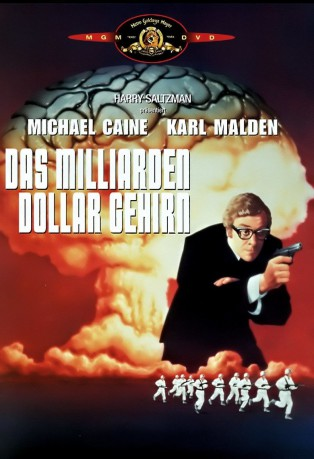
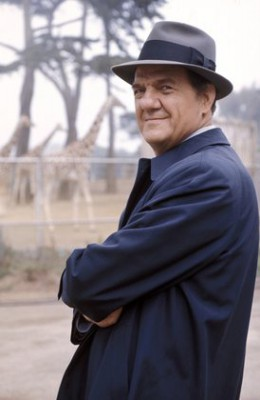

#6689 Das Milliarden Dollar Gehirn
Alternativ: Billion Dollar Brain
 
 IMDB-Wertung: 6.1 / 10
IMDB-Wertung: 6.1 / 10  Metascore: 0
Metascore: 0 
Poppige Agentenkomödie im knalligen Sixties-Flair: Agent Harry Palmer soll in Skandinavien verhindern, dass mit Viren verseuchte Eier des texanischen Kommunistenhassers Midwinter in die Sowjetunion gelangen. Mit seiner Privatarmee will der Texananer dem Riesenstaat zu Leibe rücken. Wie gut, dass Palmer die toughe Anya zur Seite steht.
Jahr: 1967
Dauer: 103 Minuten
FSK: 16
Land: England Studio: MGM Home EntertainmentTonspuren: DD2.0 - ,
Untertitel:
Auflösung: 1080p (1920x1080) Größe: 6871 MB
Genre: Thriller, Krimi
Regisseur: Ken Russell
Drehbuch: Len Deighton
Soundtrack:
Darsteller:
 Michael Caine als Harry Palmer
Michael Caine als Harry Palmer-  Karl Malden als Leo Newbigen
 Ed Begley als Gen. Midwinter
Ed Begley als Gen. Midwinter- Oskar Homolka als Col. Stok
- Françoise Dorléac als Anya
 Guy Doleman als Col. Ross
Guy Doleman als Col. Ross Vladek Sheybal als Dr. Eiwort
Vladek Sheybal als Dr. Eiwort Donald Sutherland als Scientist at Computer
Donald Sutherland als Scientist at Computer- George Roubicek als Edgar
- Brandon Brady als Chief of Security
- Susan George als Russian Girl on Train
- Åke Lindman als Extra , uncredited
- Pirkko Mannola als Extra , uncredited
- Milo Sperber als Basil
- Janos Kurutz als Latvian Gangster
- Alexei Jawdokimov als Latvian Gangster
- Paul Tamarin als Latvian Gangster
- Iza Teller als Latvian Gangster
- Mark Elwes als Birkenshaw
- Stanley Caine als G.P.O. Special Delivery Boy
- Gregg Palmer als First Dutch Businessman
- John Herrington als 2nd Dutch Businessman
- Hans De Vries als 3rd Dutch Businessman
- Fred Griffiths als Taxi Driver
- John Brandon als Jim
- Tony Harwood als Macey
- Michael Stayner als Scientist
- Alex Marchevsky als Russian Radar Operator
- Peter Forest als 2nd Russian Radar Operator
- Reed De Rouen als 1st Observer
- James Woolf als Caller
- Miki Iveria als Russian Woman in Train
- Jill Mai Meredith als Russian Girl on Train
- Dolly Brennan als Old Woman in Gangsters Hut
- Frederick Schrecker als Old Man in Train
- Bill Mitchell als Guard - Ext. Midwinter's House
- Steve Emerson als Russian Plainclothesman
- Mark Moss als Russian Plainclothesman
- Max Kirby als Shoe Shop Assistant
- Beau Daniels als The Texan , uncredited
 Harry Fielder als Cowboy at Barndance , uncredited
Harry Fielder als Cowboy at Barndance , uncredited
Datei: X:\3-Trilogie(G-M)\Harry Palmer\Milliarden Dollar Gehirn, Das (1967, FSK16, 1920x1080).mkv seit 07.08.2017
Festplatte: HD Collection-2(A-Z)-3(A-M)
 Alle Filme aus Gruppe '3-Trilogie(G-M)\Harry Palmer'
Alle Filme aus Gruppe '3-Trilogie(G-M)\Harry Palmer'